farman Manual
Everything from the basics to keybindings and each feature.
Type a keyword in the search box below to filter down to matching items
(e.g. copy / archive / Ctrl+R).
No items match "".
Basics
- farman is a dual-pane file manager. You move files between the two panes — one as the source, the other as the destination.
- Operations act on the active pane (the side with the cursor). Switch panes with
Tabor by pressing the left/right key at a pane edge. - Move the cursor with
↑↓, enter a directory withEnter, go to the parent withBackspace. - Selection:
Space(select and move down) /Shift+Space(select without moving).iinverts the selection,Ctrl+Aselects all. Shift+letterjumps the cursor to the next file starting with that letter (press again for the next match).- Three layouts: dual pane / single pane / preview.
Ctrl+Otoggles single pane; preview is available from the toolbar / settings. - On macOS,
Ctrlmaps to⌘(Command).
View modes & panes
- Display layout: choose among dual pane (two panes) / single pane (one pane) / preview (Quick View). Toggle dual / single with
Ctrl+O; switch to preview from the toolbar / settings. In preview, selecting a file on one side shows its content instantly on the other. (Settings and commands also call these “two panes / one pane”.)
Dual pane (two panes) 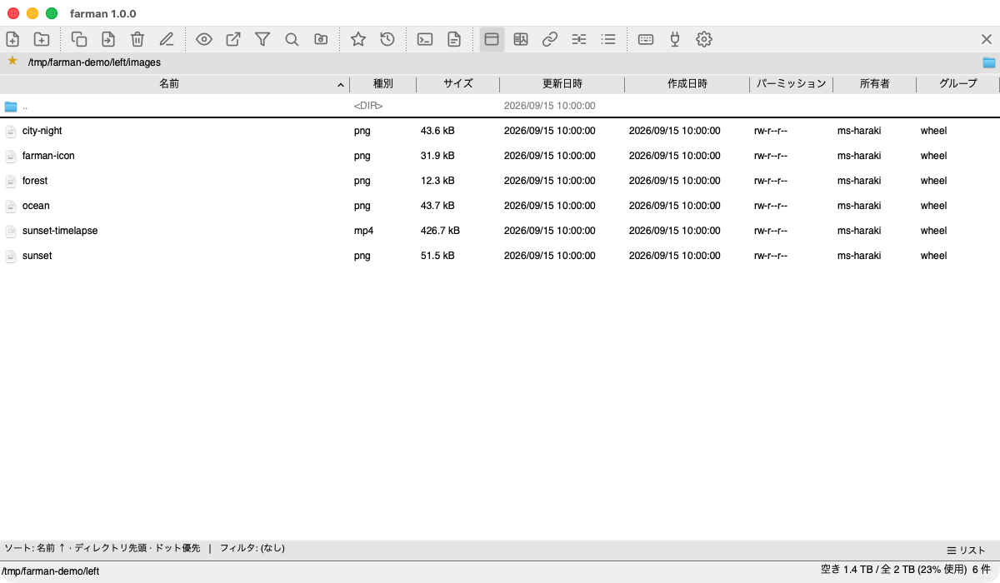
Single pane (one pane) 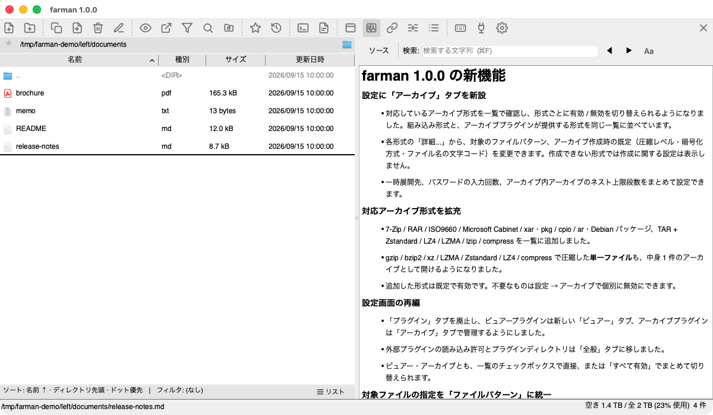
Preview (Quick View) - Thumbnails: list / small / medium / large (
Cmd/Ctrl+1–4). Works for images and the first page of PDFs.
Thumbnail view (list / small·medium·large) - Directory compare: color-coded per-row diff between the two panes; stays active after copying.

Directory compare (differences between the two panes are color-coded) - Sync browse (
y): moving one pane makes the other follow relatively. - Directory sync (
Ctrl+→/Ctrl+←): match one pane's path to the other side. - Sort & filter (
s): per-pane ordering and display filter (can be saved for that directory only).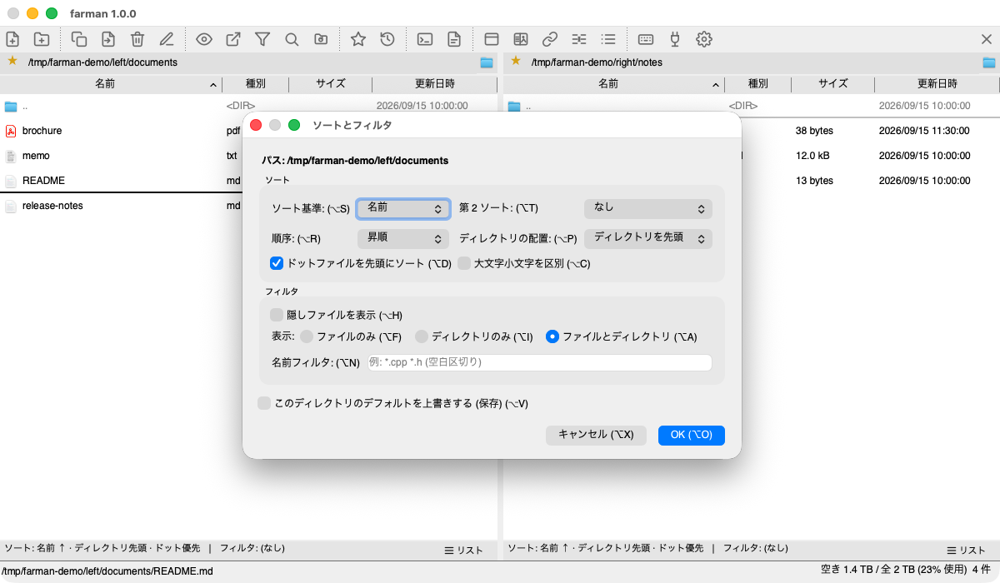
Sort & filter (per-pane ordering and display filter) - Log pane (
Ctrl+L): toggle the operation log.
Keybindings (defaults)
All of these can be changed under Settings → Keybindings (open Settings with Ctrl+,; Tab and Shift+letter are fixed). On macOS, Ctrl is ⌘.
Navigation & selection
| Key | Action |
|---|---|
| ↑ / ↓ | Move the cursor |
| ← / → | Parent directory at a pane edge / switch to the other pane |
| Home / End | Jump to first / last |
| PgUp / PgDown | Move by page |
| Enter | Enter a directory / open a file in the viewer |
| Backspace | Go to the parent directory |
| Tab / Shift+Tab | Cycle focus (★→address→📁→list→mode); wraps to the opposite pane / preview at the ends |
| Shift+letter | Jump to the next file starting with that letter (repeat for the next match) |
| Space | Toggle selection and move the cursor down |
| Shift+Space | Toggle selection (cursor stays) |
| i | Invert the selection |
| Ctrl+A | Select all |
File operations
| Key | Action |
|---|---|
| c | Copy selected files to the other pane |
| m | Move selected files to the other pane |
| k | Create a new directory |
| n | Create a new file |
| d | Delete (trash / permanent is chosen in the confirm dialog) |
| r | Rename |
| Ctrl+R | Bulk rename dialog |
| Ctrl+C | Copy the cursor / selected file paths to the clipboard |
| a | Properties (view / edit name, location, size, dates, permissions) |
| p | Pack selected files into an archive |
| u | Unpack the archive under the cursor |
| Shift+Enter | Open / run with the OS default app (double-click does the same) |
Viewers, view & panes
| Key | Action |
|---|---|
| v | Open in the viewer |
| Ctrl+Enter | Choose which viewer to open with (built automatically from installed plugins; video / audio and others included) |
| s | Sort & filter settings for this pane |
| / | Show the Quick Filter |
| Ctrl+O | Toggle single / dual pane |
| Ctrl+L | Toggle the log pane |
| y | Toggle sync browse |
| Ctrl+→ / Ctrl+← | Sync this pane's directory to the other side |
| f | File search dialog |
| Ctrl+P | Toggle the preview pane |
| Ctrl+1–Ctrl+4 | Switch view mode (list / thumbnails S・M・L) |
| = | Compare directories dialog |
Bookmarks, history & app
| Key | Action |
|---|---|
| b | Bookmark / unbookmark the current path (toggle) |
| Ctrl+B | Bookmark list |
| h | Directory history |
| t | Open a terminal (external app integration) |
| e | Open in an editor (external app integration) |
| Ctrl+, | Settings dialog |
| ? | Show the keybinding list |
| Ctrl+Q | Quit |
| Ctrl+Shift+P | Open the plugin settings |
File operations
- Copy / move (
c/m): sends the selection (or the cursor row if nothing is selected) to the other pane. The confirm dialog lets you set the destination and the overwrite behavior (ask each time / overwrite / skip / rename).
Copy / move confirm (set the overwrite behavior) - Delete (
d): choose trash or permanent deletion in the confirm dialog.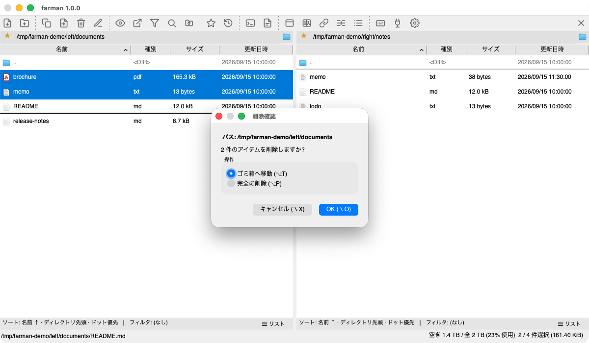
Delete confirm (trash / permanent) - Rename (
r): rename the file under the cursor.Rename (change the name of the file under the cursor) - Bulk rename (
Ctrl+R): template + sequential numbering + regular-expression replacement, with a live preview before applying.
Bulk rename (template + numbering + regex, with a preview before applying) - Create:
kfor a directory,nfor a file.Create — directory ( k)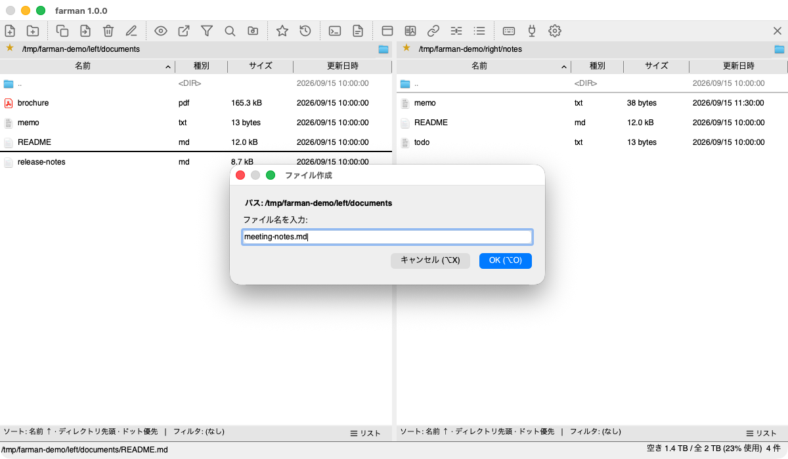
Create — file ( n) - Copy path (
Ctrl+C): copies the absolute path of the cursor / selected files to the clipboard (newline-separated for multiple). - Properties (
a): a single dialog showing name, location, size, and modified / created dates together. The modified date and permissions (attributes) can be edited in place. A multi-selection shows the aggregated total size and item count; owner / group are shown with both name and ID (the name is editable only when it is common across the selected files, and is hidden on Windows).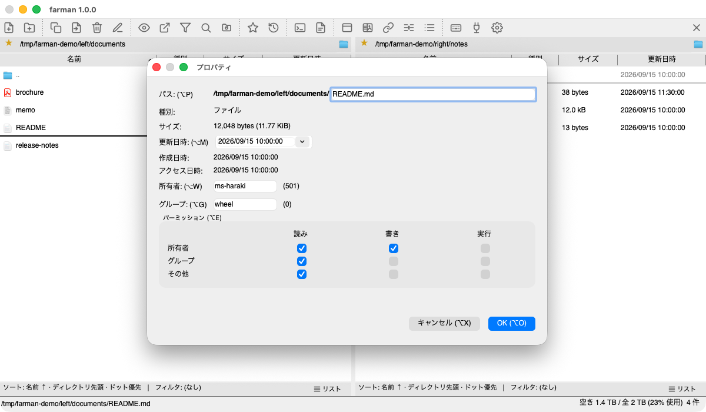
Properties — name, location, size, dates and permissions in one dialog (view / edit) - Open with the OS default app (
Shift+Enteror double-click): opens the file / directory with its associated application.
Archives
- Create (
p): pack selected files into zip / tar / tar.gz / tar.bz2 / tar.xz. You can set the compression level and AES-256 password encryption for zip.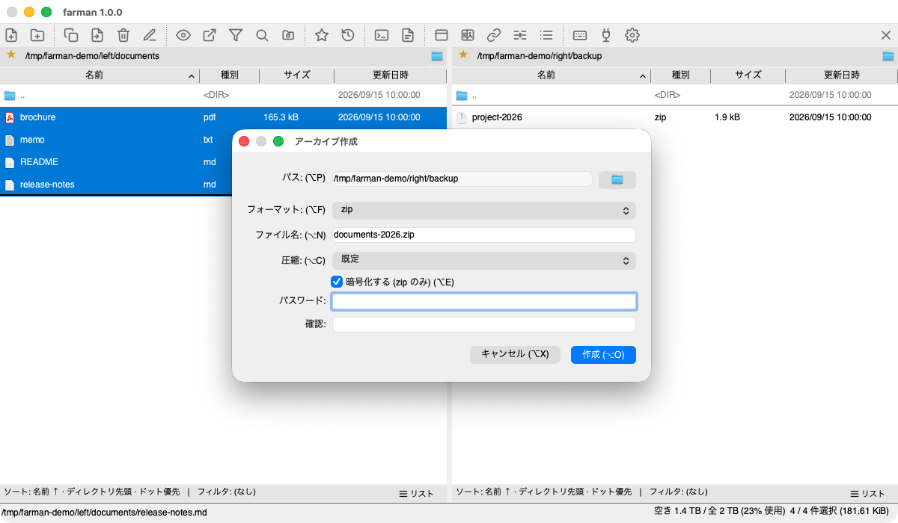
Create archive (format, compression level, password encryption) - Extract (
u): unpack the archive under the cursor. Encrypted zips can be extracted by entering the password.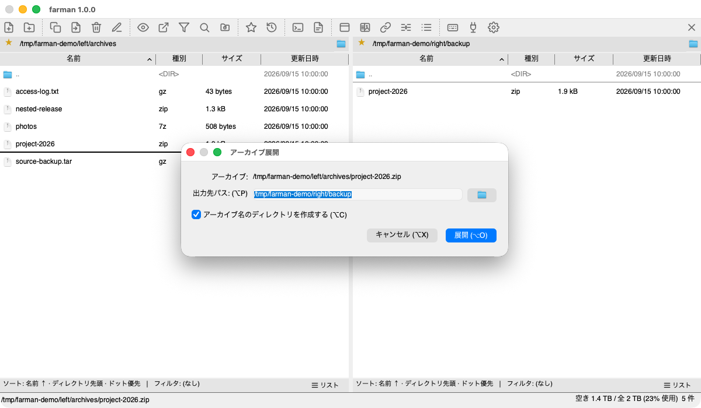
Extract archive (choose the destination) - Browse inside archives: open an archive and move through it like a normal folder (the path shows as
archive.zip!/inner/). You can also selectively extract — pick just the files / directories you need and extract only those.
Archive browsing (open an archive like a folder; browse and selectively extract)
Search & navigation
- File search (
f): recursive search in the background; jump straight to a result.
File search (recursive, in the background; jump straight to a result) - Quick Filter (
/): quickly narrows the current directory by what you type.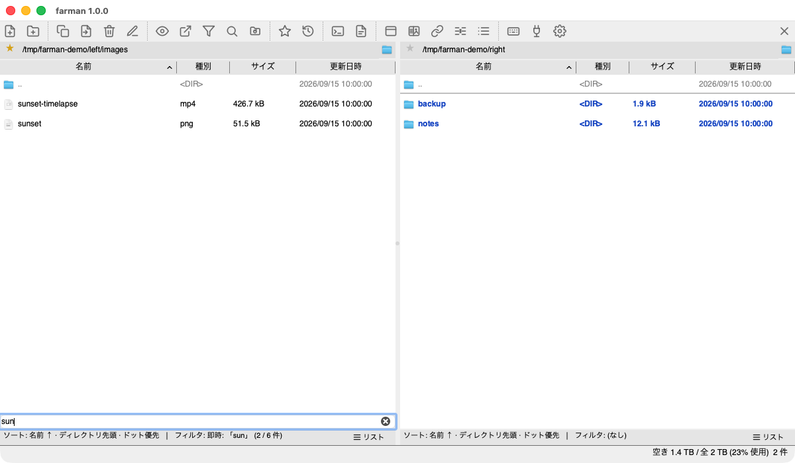
Quick Filter (narrow the listing by what you type) - Bookmarks:
bto add / remove the current location,Ctrl+Bfor the list. Besides your saved favorites, the list also shows auto-detected mounted drives (external disks and network drives).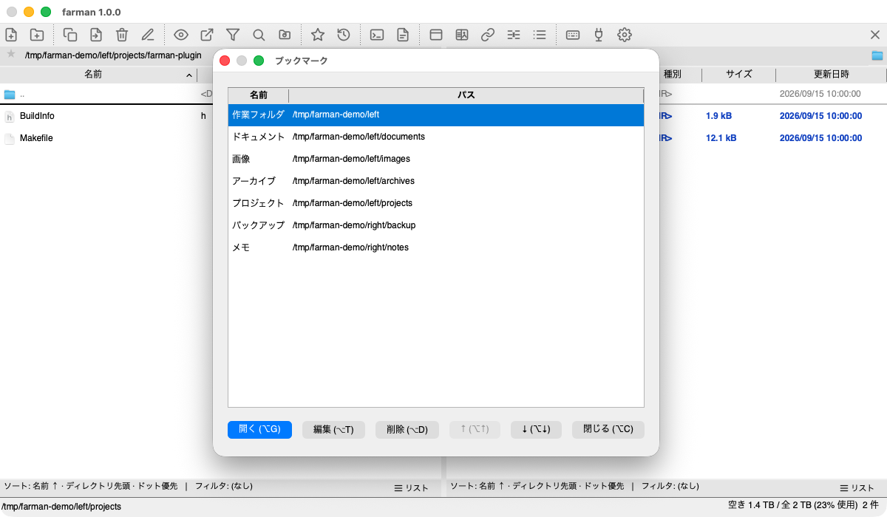
Bookmarks list (favorites + auto-detected drives) - Directory history (
h): jump to a previously visited directory.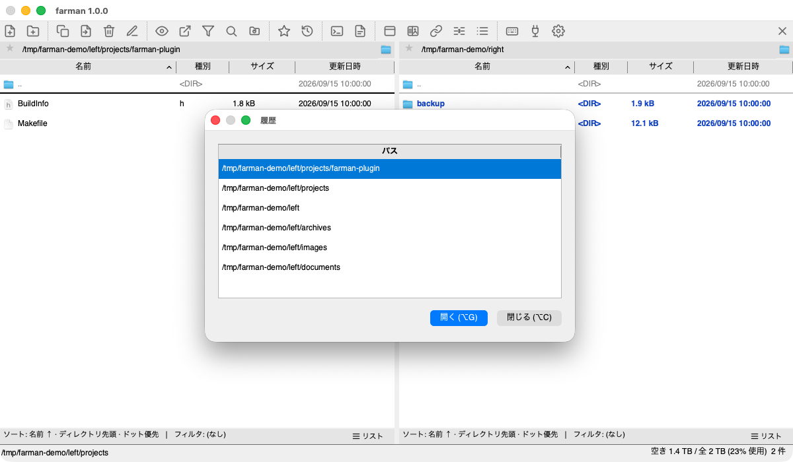
Directory history - Address bar: type a path to navigate (with path completion).
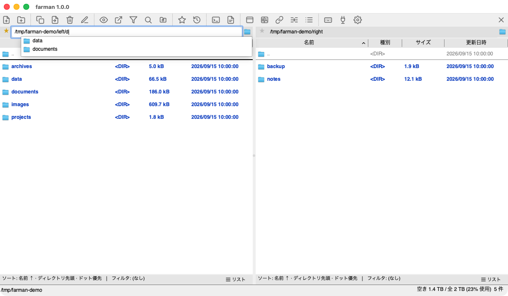
Address bar (completion candidates while typing a path)
Settings
Open Settings with Ctrl+,. Switch settings using the categories on the left (General / Behavior / Appearance / Plugins / External Apps / Keybindings). The main items in each category are:
- General: basic app-wide settings — startup behavior, window, language, and logging.
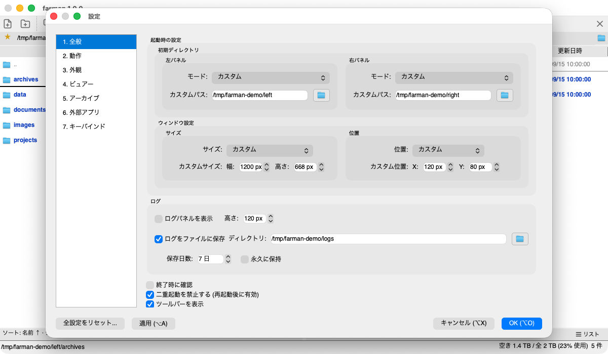
Settings → General - Initial directory: open Home / the last session / a custom path on startup. Set per pane (left / right).
- Window: size and position as default / last session / custom.
- Log: show the log pane (with a fixed height), and write logs to file (daily log files in a chosen folder, deleted automatically past the retention days, or kept forever).
- Confirm on exit: whether to show a confirmation dialog when quitting.
- Prevent multiple instances: don't launch a second copy of farman (takes effect on next launch).
- Show toolbar: show or hide the toolbar.
- Language: Auto (follows the OS) / English / Japanese. Applied on next launch.
- Auto-update: check once per day, optionally download and install without asking, plus a “Check now” button.
- Backup / restore: export / import all settings (including bookmarks, custom commands, and color schemes) as a single JSON file to move to another machine.
- Behavior: default behavior for sorting, navigation, file operations, and list display.
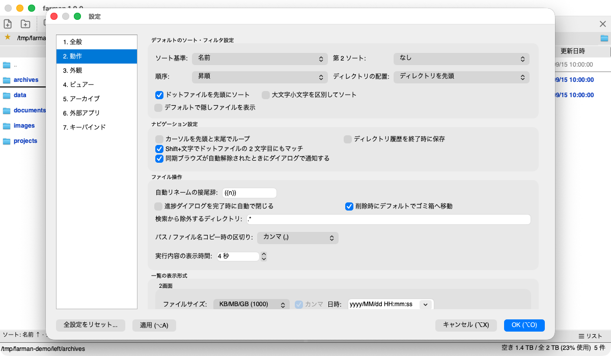
Settings → Behavior - Default sort & filter: primary / secondary sort key and ascending / descending, where to place directories (first / last / mixed with files), sort dot files first, case sensitivity, show hidden files by default.
- Navigation: cursor wrap-around, persist directory history (restored on next launch), match a dotfile's second character with
Shift+key, notify when Sync Browse is auto-disabled. - File operations: move to Trash by default when deleting, auto-rename suffix, search exclude dirs, close the progress dialog automatically when done.
- List display: file-size units (bytes / KB / KiB / auto) and thousands separator, date/time format, which columns to show.
- Viewer display: default display mode for viewers (inline / separate window, etc.).
- Appearance: look-and-feel — theme, colors, cursor, row height, and so on.
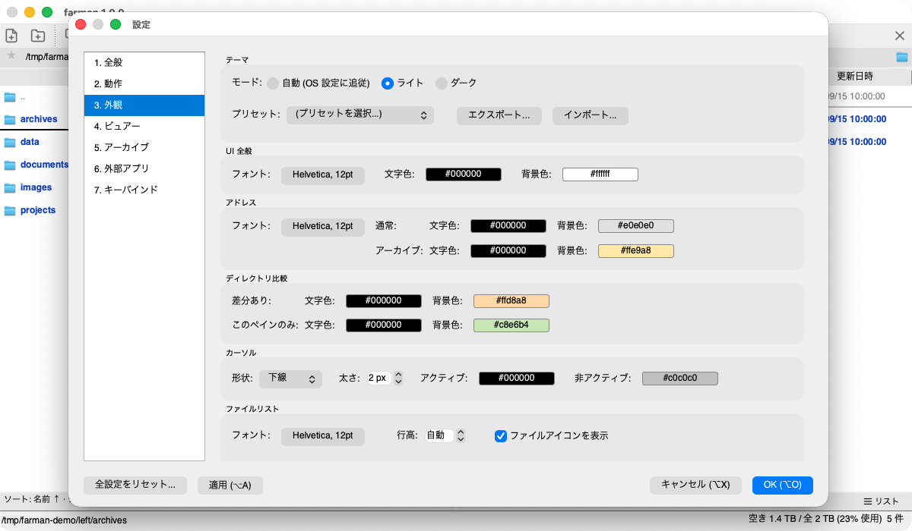
Settings → Appearance - Appearance now covers the app's own look (UI overall, file list, address bar, and so on). Each viewer's font, colors, image transparency, and associated extensions have moved to that viewer's settings under Settings → Plugins (see below).
- Theme: overall UI color preset (Light / Dark; Auto follows the OS).
- UI overall: the app's base colors.
- Address bar: address-bar colors.
- File list: per-category file colors (selected / unselected, active / inactive), bold, and row height. Font family / size and row height are shared between Light and Dark; colors and the directory bold setting are per theme.
- Cursor / active pane: cursor appearance, highlight for the active side.
- Directory compare: colors for diff rows.
- Plugins: lists the installed viewer plugins in per-type tabs. From each row's "Details..." you can review and change its category, plugin ID, path, enabled state, priority, and associated extensions, plus each viewer's display settings (font, colors, image transparency, and so on). Font family / size are shared between Light and Dark, while colors are edited per theme via the Light / Dark toggle inside each page (the per-viewer settings that used to live in the "Appearance" tab were consolidated here). User-built external viewer plugins (.dylib / .so / .dll) can also be loaded from a chosen plugins directory.
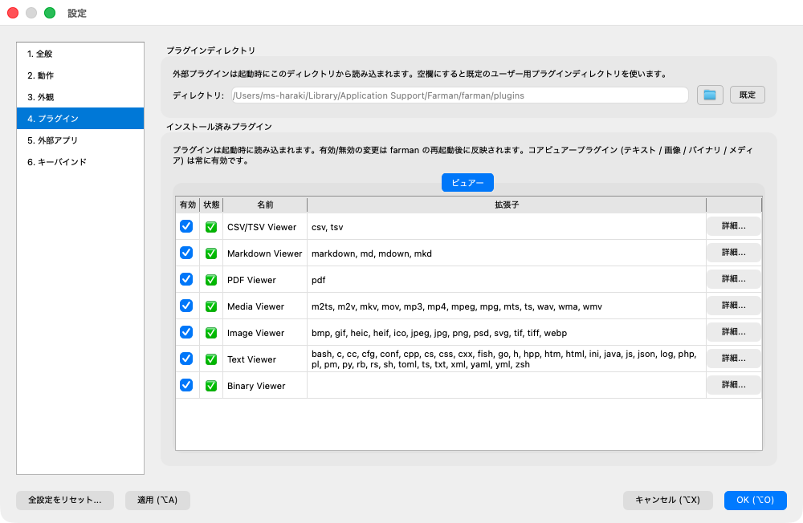
Settings → Plugins (installed list and details) - External Apps: register launch commands for a terminal (
t), editor (e), and so on. Placeholders pass the current path or selected files.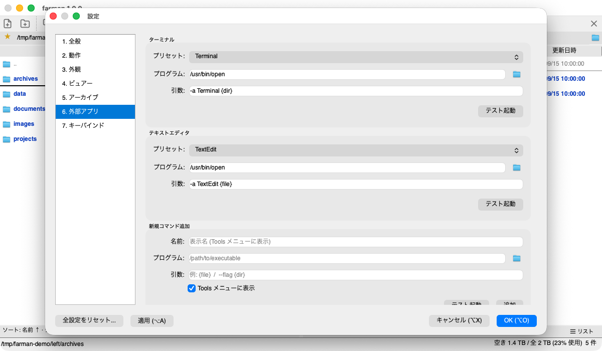
Settings → External Apps - Keybindings: every shortcut is customizable. Reset to defaults, choose presets (e.g. Total Commander style), or clear an assignment.
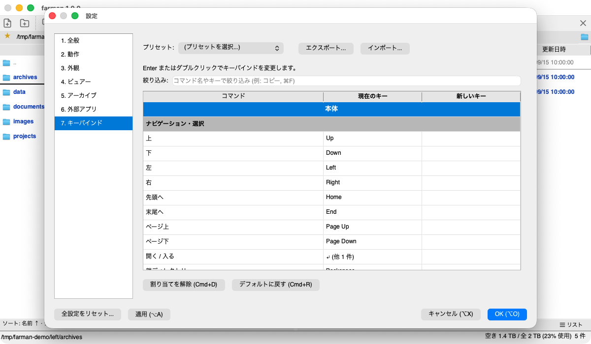
Settings → Keybindings
Settings file location: macOS ~/Library/Preferences/Farman/farman/settings.json / Linux ~/.config/Farman/farman/settings.json / Windows %APPDATA%\Farman\farman\settings.json
Bundled official viewers
Open a viewer with v, or choose one with Ctrl+Enter. Viewers work inline or in a separate window, with full-text search.
Text

Image

Video / Audio
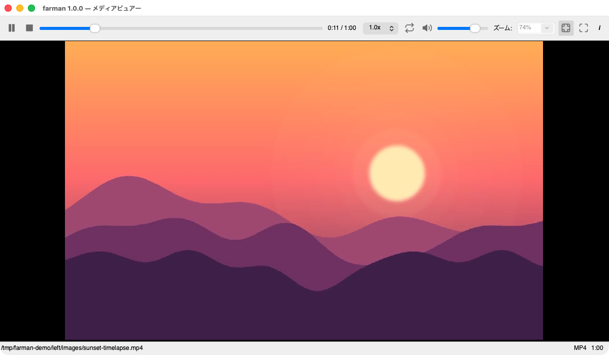
Markdown


CSV·TSV

Binary

Each viewer's defaults (associated extensions, display options, etc.) can be changed under Settings → Plugins: select the viewer and open “Details” (default text encoding, image Fit / zoom, PDF view mode, CSV delimiter, media volume / autoplay, and so on).
About extension associations: when several viewers list the same extension, the viewer with the higher priority is chosen (resolved by priority among the extensions each viewer declares). There is no “first-wins” override that pins a specific extension to a specific viewer. If a file does not open in the viewer you want, add the extension to the preferred viewer and remove it from the competing one.
Install & updates
- Download: from the download section on the top page or GitHub Releases. Each asset ships with a
.sha256checksum. - macOS:
.dmgfor Apple Silicon (arm64). Signed with a Developer ID and notarized, so it launches without a Gatekeeper warning. - Windows: installer
.exeor portable.zip(x64). Code signing is not yet in place. - Linux:
.AppImageor.deb(x86_64). - Auto-update: checks for a new version on startup and updates in one click — download, verify (SHA256), install.
- What's New dialog: shows the changes once on first launch after an update. Reopen any time via Help → What's New...
This manual reflects the latest version of farman. Keybindings are the default values. For questions or corrections, please use GitHub Issues.